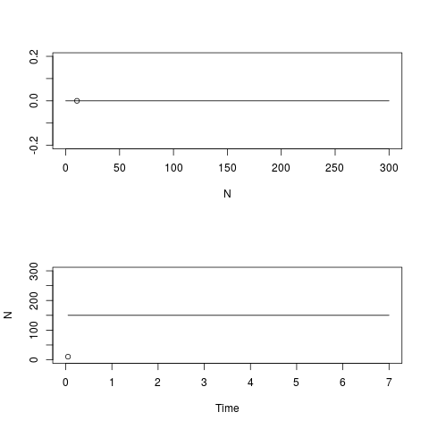
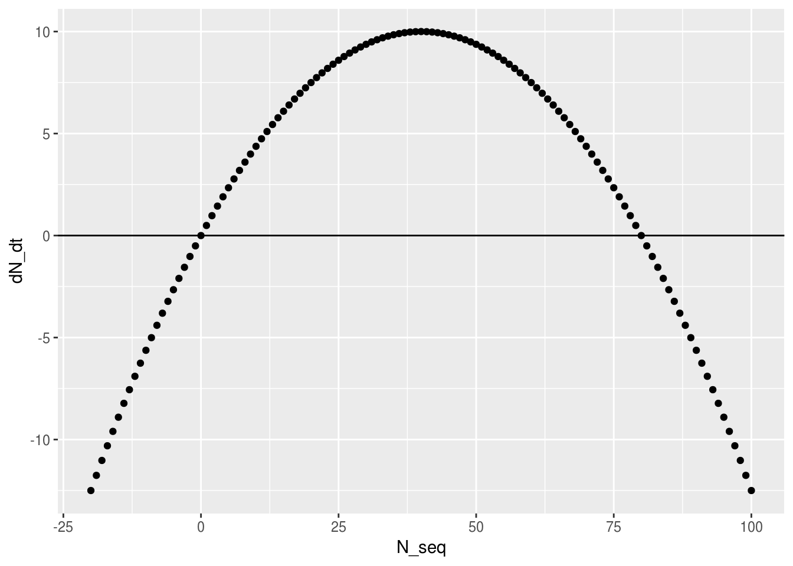
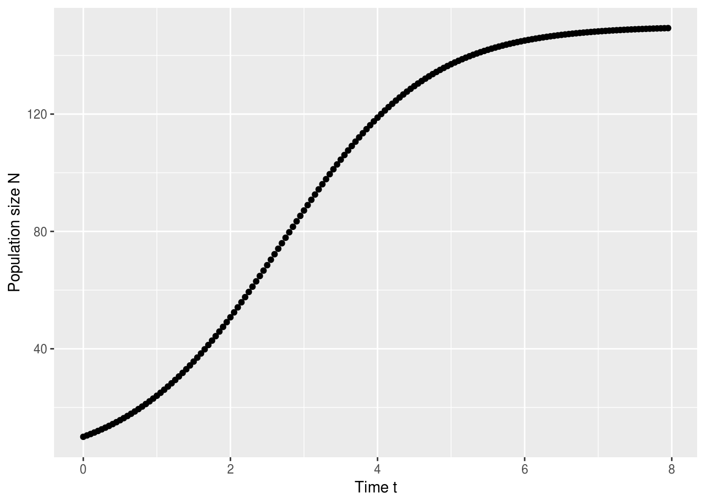
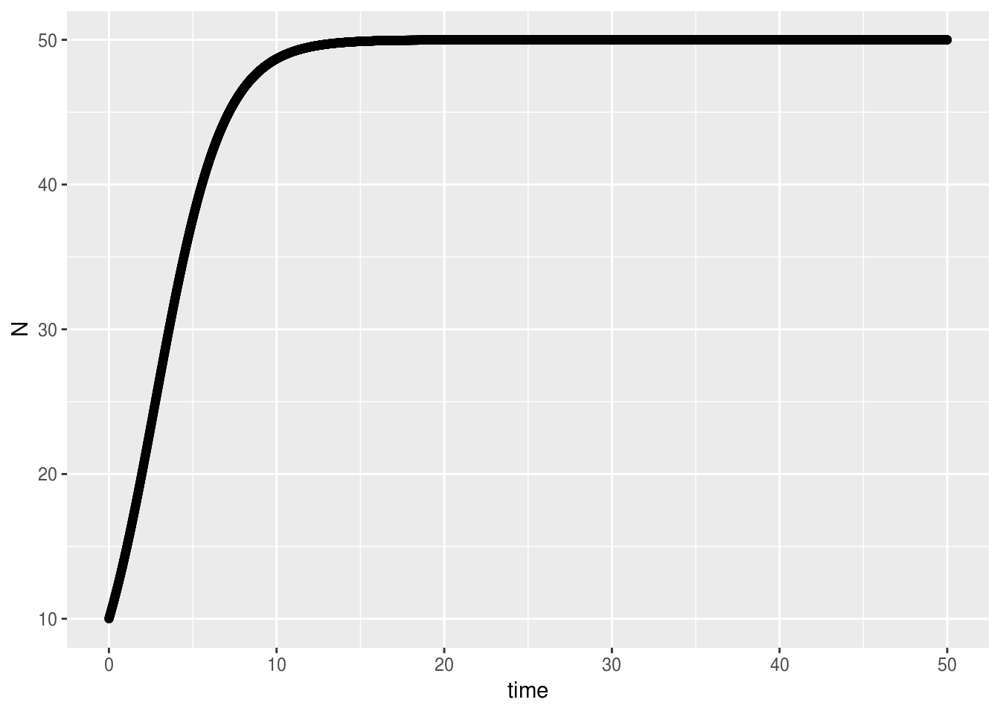

Numerically solving differential equations in R
Madeleine Bonsma-Fisher
Lesson preamble
Learning objectives
- Review differential equations and one-dimensional phase portraits
- Numerically solve differential equations in R using Euler’s method and R’s ODE solver
Lesson outline
Total lesson time: 2 hours
- Review qualitative analysis of one-dimensional systems (20 min)
- Euler’s method on paper (20 min)
- Euler’s method in R (40 min)
- Using R’s ODE-solver to numerically solve differential equations (30 min)
Setup
install.packages('deSolve')install.packages('ggplot2')(ortidyverse)install.packages('dplyr')(ortidyverse)install.packages('tidyr')(ortidyverse)
Recap and some tips
You can include math in R notebooks using LaTeX syntax.
$$\frac{dN}{dt} = r N (1 - N/K)$$produces \[\frac{dN}{dt} = r N (1 - N/K)\]There’s also a tool that let’s you take pictures of math and then it will be converted to LaTeX for you!
Need LaTeX code in your Rmd?
— Jonathan Carroll (@carroll_jono) September 27, 2017
Hate writing it? Don't know how? Purely lazy?
Well… mathpix 0.1.0 is now on CRAN. https://t.co/uTEHzJDrIq pic.twitter.com/QMg8OX9hyPDifferential equation: an equation that describes how a function of variables is related to derivatives of those variables.
Drawing phase portraits in one dimension:
Logistic equation simulation
- Fixed points: values of \(N\) at which \(\frac{dN}{dt}\), the rate of change of \(N\), is \(0\). To find fixed points, plot \(\frac{dN}{dt}\) vs. \(N\) and find the place(s) where it crosses the \(x\) axis.
- Stability: if you start at some \(N\) close to the fixed point but not exactly on it, will you go towards (stable) or away (unstable) from the fixed point? The sign of \(\frac{dN}{dt}\) on either side of a fixed point tells you whether \(N\) will increase or decrease in that area. Draw an arrow to the right if \(\frac{dN}{dt}\) is positive, and draw an arrow to the left if \(\frac{dN}{dt}\) is negative.
Challenge
Find the fixed point(s) of the following differential equation.
\[\frac{dN}{dt} = \text{sin}(N)\]
- Plot \(\frac{dN}{dt}\) vs. \(N\) for \(N\) ranging from \(0\) to \(10\).
- Sketch a phase portrait. Are the fixed point(s) stable or unstable?
You can think of \(dN/dt\) as a velocity: it tells you how fast \(N\) is changing and in what direction. If we start a trajectory at some initial \(N_0\), \(dN/dt\) dictates whether \(N\) will increase, decrease, or stay the same. If \(N_0\) happens to be at a fixed point, \(N\) will remain at \(N_0\) for all time.
Numerically simulating models in R
Some differential equations are possible to solve analytically (by integration). But when we encounter equations that are hard to solve analytically, we can instead solve them numerically. Numerically solving a differential equation means calculating an approximate solution for the variable of interest as it evolves in time, using the information contained in the equation about the rate of change of the variable at each time point.
Let’s use the logistic equation as an example again. Like last class, we will plot \(dN/dt\) vs. \(N\).
library(ggplot2)
N_seq <-
seq(-20, 100) # make a sequence of N values to plot dN/dt against
logistic_eqn <- function(N, r, K) {
# calculate dN/dt for the logistic equation
# r: growth rate (divisions per hour)
# K: carrying capacity
# N: population size
return(r * N * (1 - N / K))
}
dN_dt <- logistic_eqn(N_seq, r = 0.5, K = 80)
qplot(N_seq, dN_dt) +
geom_hline(aes(yintercept = 0)) # a line at zero for visual aid
\(dN/dt\) is the slope of \(N\) with respect to \(t\) at a given value of \(N\). We can use the slope as an update rule, exactly like the recursion equation we wrote last class that in the limit became a derivative:
\[lim_{\Delta t \to 0}\frac{N_{t+\Delta t} - N_t}{\Delta t} = \frac{dN}{dt}\]
Given a starting point \(N_t\), we can approximate \(N_{t+\Delta t}\) using the differential equation:
\[\frac{N_{t+\Delta t} - N_t}{\Delta t} \approx \frac{dN}{dt} \]
\[N_{t+\Delta t} \approx N_t + \frac{dN}{dt} \Delta t\]
To generate a solution for \(N\) as it varies with \(t\), we loop through the recursion relation above, updating \(N\) at each timestep.
The image below is a cartoon of what this looks like in practice. Starting from a point \(A_0\), we use the derivative to tell us in what direction we should take our next step. \(\Delta t\) is a parameter we can choose that determines how large of a step we take.
This process has several names: Euler’s method after Leonhard Euler who wrote about it in about 1770, or forward finite difference method, referring to the process of stepping forward in time in small (finite) increments (difference).

Euler’s method: blue is the true solution, red is the approximate solution. Image source: Wikimedia
There are many related but slightly different techniques for numerically solving differential equations. The best method will often depend on the situation, and we won’t go into detail on any other methods, but you can look up Runge-Kutta methods if you’re interested in learning more about it.
R has a package for numerically solving differential equations called deSolve. We will be using this package as well as implementing Euler’s method ourselves.
Euler’s method on paper
We will calculate numerical solutions for the logistic equation so that we can compare what we know about the fixed points and their stability with the way a population obeying this equation changes in time. We’ll start with a paper example, then later implement it in R with a loop.
This is the update rule:
\[N_{t+\Delta t} = N_t + \frac{dN}{dt} \Delta t\]
To calculate a solution which consists of some values of \(N\) at particular times \(t\), we need to choose a population size to start at (\(N_0\)), values for the parameters, and a timestep size (\(\Delta t\)).
Let’s choose \(r = 1\), \(K = 10\), \(N_0 = 2\), and \(\Delta t = 1\) to make our math easier.
Now we have \(N_{t=0} = N_0 = 2\), and we want \(N_{t=0+ \Delta t} = N_{t=0 +1} = N_1\). We apply the update rule:
\[N_1 = \frac{dN}{dt} \Delta t + N_0\]
\[N_1 = \frac{dN}{dt} \times 1 + N_0\]
\[N_1 = \frac{dN}{dt} + N_0\]
What should we put in for \(dN/dt\)? We know \(dN/dt\) for the logistic equation is
\[\frac{dN}{dt} = rN(1-\frac{N}{K})\]
We’ve chosen \(r\) and \(K\), but what value should we put in for \(N\)?
This is not obvious at all, and there’s really no one right answer. There are other related methods of numerically solving differential equations that choose a value of \(N\) halfway between \(N_0\) and \(N_1\) (the midpoint method), or you could use \(N_1\). But the simplest thing to do is to use \(N_0\), because we don’t yet know \(N_1\) and it’s slightly more complicated to use an \(N\) that depends on \(N_1\). This is the process shown in the cartoon above — we use the slope of \(N\) at the point \(N_0\) to tell us where \(N\) should be at the next timestep.
If we put in \(N_0\) to \(dN/dt\):
\[N_1 = rN_0(1-\frac{N_0}{K}) + N_0\]
Now we have a thing we can calculate! Plugging in the numbers we chose for \(r\), \(K\), and \(N_0\), we get
\[N_1 = 1 \times 2(1-\frac{2}{10}) + 2\] \[N_1 = 2+ 1.6 = 3.6\] We repeat the proccess to get \(N_2\), and so on, remembering to evaluate \(dN/dt\) at the value of \(N\) from the previous timestep. The vertical bar \(\vert\) instructs us to substitute \(N_0\) for \(N\) in the derivative.
\[N_2 = \frac{dN}{dt}\vert_{N = N_1} + N_1\]
\[N_2 = rN_1(1-\frac{N_1}{K}) + N_1\]
\[N_2 = 2.304 + 3.6 = 5.904\]
In 1770 there were no computers. It’s really amazing that people were using these numerical techniques long before computers existed to automate the process. According to Wikipedia, it was partly the push to develop faster and better ways to numerically solve differential equations that led to the computer as we know it.
Lorenz simulated his famous equations on one of the earliest computers in 1960, and this was how he discovered the chaotic behaviour of the model.
In the movie Hidden Figures, Katherine Goble Johnson uses Euler’s method to numerically match the equations for hyperbolic and elliptical orbit to get the astronaut John Glenn back from space. Watch the scene here.
Euler’s method in R
Let’s review for loops first. A loop is a method to do something over and over again, which is perfect for Euler’s method — on paper, we were performing the same calculation over and over with a different value of \(N\) each time.
Here’s an example from an earlier lecture:
## [1] 2
## [1] 4
## [1] 6Now let’s build up our Euler’s method code in R.
# Numerically solve the logistic equation using Euler's method
# We have a function `logistic_eqn` that we defined before, so we can use that one.
# We don't need to re-write it here if the previous chunk has been executed, but we can.
logistic_eqn <- function(N, r, K) {
# calculate dN/dt for the logistic equation
# r: growth rate (divisions per hour)
# K: carrying capacity
# N: population size
return(r * N * (1 - N / K))
}
# parameters
K <- 150
r <- 1
dt <- 0.05 # timestep - the smaller, the better
tmax <- 8 # the total time we want to numerically solve for
points <- tmax/dt # the number of data points in the simulation - add 1 so that we can start at t=0
# vectors to store values of N and t at each timestep:
N_vector <- numeric(points) # population size
t_vector <- seq(0, tmax - dt, by = dt) # time vector
# initial condition
N0 <- 10
N_vector[1] <- N0
N <- N0 # initialize variable N
for (i in 2:points) {
# start at 2 because the initial state is at position 1
dN <- logistic_eqn(N = N, r = r, K = K) * dt
N <- N + dN # the variable N is changing at each step of the loop
N_vector[i] <- N
}
qplot(t_vector, N_vector,
ylab = "Population size N",
xlab = "Time t") 
This numerical solution shows us that the population size grows until it reaches the carrying capacity \(K\), the stable fixed point.
A note on why \(\Delta t\) has to be small
If you’re numerically solving a differential equation with Euler’s method, \(\Delta t\) must be ‘small’. How small is small, and why does it have to be small? The answers to these are related, and to see why, let’s look at what can happen if \(\Delta t\) is too big with an example from the logistic equation.
# what happens if we make dt too large when simulating?
# in this example, the starting population N0 is much larger than the carrying capacity.
# This means dN/dt will be a large negative number: N will decrease quickly from such a large size.
r <- 0.5
K <- 50
dt <- 1
N0 <- 400
dN <- logistic_eqn(N0, r, K) * dt # this is the change in N that we wil add to N0 to calculate N1
N1 <- N0 + dN
print(N1) # this is no good: N has shot from +400 to -1000 in a single step! ## [1] -1000dN <- logistic_eqn(N1, r, K) * dt # calculate what the next change in N would be
N2 <- N1 + dN
print(N2) # N is getting more and more negative!## [1] -11500Challenge - in groups
Use Euler’s method to calculate a numerical solution for the following differential equation:
\[\frac{dx}{dt} = -2.3 x\]
The exact solution is
\[x(t) = x_0 \text{e}^{-2.3t}\]
- Use an initial condition of \(x_0 = 50\), and calculate your answer for \(t\) from \(0\) to \(10\).
- Try a few different step sizes (\(\Delta t\)) such as \(0.1\), \(0.7\), and \(1\). What happens if \(\Delta t\) is too large?
This is what’s called numerical instability — the numerical solution grows very large (either positive or negative) but the true solution doesn’t. In the logistic equation example above, while the true solution does grow more negative if \(N < 0\), we get a trajectory that doesn’t make sense if we use a step size that’s too large.
For accuracy, \(\Delta t\) should be small. But the smaller it is, the longer it will take to compute the numerical approximation. In practice, choose a \(\Delta t\) that is small enough that your solution doesn’t behave strangely, but large enough that you can simulate it in a reasonable amount of time.
Using deSolve in R to solve differential equations numerically
R has a package called deSolve which contains several functions to numerically solve differential equations. Let’s look at the documentation for deSolve:
This is pretty hard to read, especially if your calculus was a long time ago. The important thing to know for our purposes is that the equations we’re working with are first-order ordinary differential equations. First-order means that the derivatives are all first derivatives (as opposed to second derivatives, third derivatives, etc.). Ordinary means that the derivatives are full derivatives (as opposed to partial derivatives which are written \(\partial N / \partial t\)).
This means that the function we’ll be using is called ode, which stands for ‘ordinary differential equation’.
?ode
# The possible methods are all different ways of numerically solving DEs.
#stiff vs. non-stiff : no precise definition, but 'stiff' generally means it's possible to be numerically unstable if the step size is too big. The method used by ode to numerically solve differential equations is called lsoda, which automatically tries to use the best method depending on the equation. This is why people like to use functions like ode: the result is often more accurate than Euler’s method and might also be faster to run.
# Example: deSolve with logistic eqn
# now we need to define our function a bit differently to be in the format that `ode` uses
logistic_fn <- function(t, state, parameters) {
# Calculates dN/dt for the logistic equation
# t: time point at which to evaluate derivative (doesn't actually change anything in this example)
# state: vector of variables (here it's just N)
# parameters: vector of model parameters c(r, K)
N <- state
r <- parameters[1] # the first element of the parameters vector is r
K <- parameters[2] # the second element of the parameters vector is K
#rate of change
dN <- r * N * (1 - N / K)
#return rate of change
return(list(c(dN)))
}
parameters <- c(r = 0.5, K = 50)
state <- c(N = 10)
times <- seq(0, 50, by = 0.01) # the timestep dt is chosen by setting the increment with 'by'
#?ode # look at the documentation to learn about the parameters
result <- ode(y = state, times = times, func = logistic_fn, parms = parameters)The output of ode is a matrix that contains the times we requested and its calculated values of N.
Notice that by using ode we didn’t have to write a loop explicitly ourselves. Under the hood, ode performs a similar computation to what we did manually.
## time N
## [1,] 0.00 10.00000
## [2,] 0.01 10.04006
## [3,] 0.02 10.08024
## [4,] 0.03 10.12054
## [5,] 0.04 10.16096## [1] "deSolve" "matrix"result <- data.frame(result) # convert it to a dataframe so we can use ggplot
ggplot(result) +
geom_point(aes(x = time, y = N))
Extras
Simulation of the logistic equation
library(animation)
library(ggplot2)
ani.options(interval=.00001)
# dynamical equation for the logistic model
dN_dt <- function(N,r,K) {
return(r*N*(1-N/K))
}
# parameters
K <- 150
r <- 1
dt <- 0.05 # timestep - should really be smaller for accuracy
tmax <- 7
points <- tmax/dt
t_vector <- seq(dt, tmax, by = dt)
# vectors to store simulation
N_vector <- numeric(points);
# initialize variables
Nmax <- 300
N_axis <- seq(0, Nmax, by = 0.5)
saveGIF({
N <- 10
N_vector[1] <- N
par(mfrow=c(2,1))
count <- 1
for (t in t_vector){
dN <- dN_dt(N, r, K)*dt
N <- N + dN
N_vector[count] <- N
plot(N,0, ylim = c(-0.2,0.2), xlim = c(0,Nmax), ylab = "")
lines(N_axis, 0*N_axis)
plot(t_vector[1:count],N_vector[1:count],
ylim = c(0,Nmax), xlim = c(0,tmax),
xlab = "Time", ylab = "N")
lines(t_vector, (numeric(points) + 1)*K)
count <- count + 1
}
N <- 290
par(mfrow=c(2,1))
count <- 1
for (t in t_vector){
dN <- dN_dt(N, r, K)*dt
N <- N + dN
N_vector[count] <- N
plot(N,0, ylim = c(-0.2,0.2), xlim = c(0,Nmax), ylab = "")
lines(N_axis, 0*N_axis)
plot(t_vector[1:count],N_vector[1:count],
ylim = c(0,Nmax), xlim = c(0,tmax),
xlab = "Time", ylab = "N")
lines(t_vector, (numeric(points) + 1)*K)
count <- count + 1
}
})This work is licensed under a Creative Commons Attribution 4.0 International License. See the licensing page for more details about copyright information.